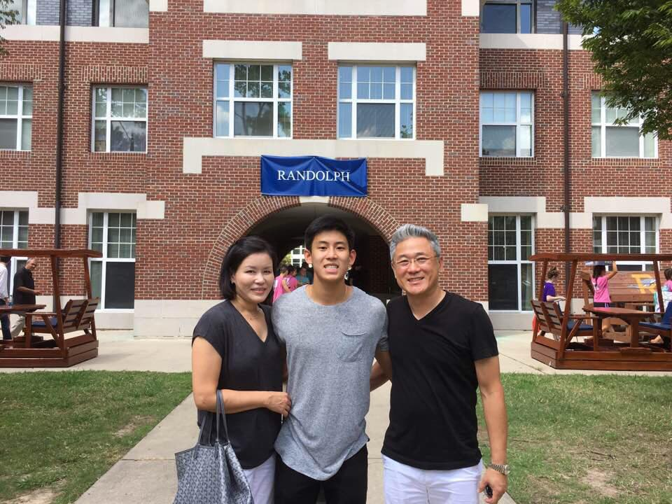

An Introduction

Hello! My name is Paul Rhee and I am a rising sophomore studying Computer Science and Economics at Duke University. I was born and raised on Long Island (Dix Hills) in New York. I have an older brother, Brian, (also a Blue Devil!), along with a dog named Bonnie. Aside from academics, I love going to the gym and getting a good pump, so if you ever want to catch a workout, definitely hit me up! I've also been playing cello since elementary school and definitely have a special place in my (Spotify) heart for classical music. On top of all the skills I learn from the Full Stack Coding course in Cape Town, I hope to also climb Table Mountain and maybe even try skydiving/bungee jumping. Can't wait to get started!